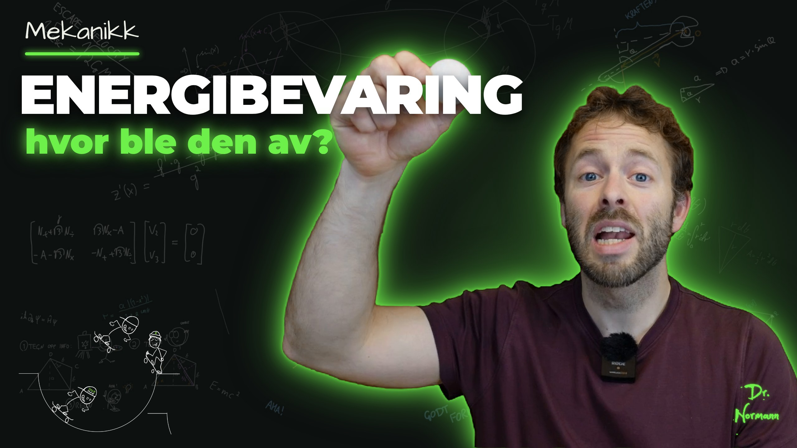

<!DOCTYPE html>
<!-- Animasjon: Energibevaring. Innholdet skrives i innhold.js og limes inn her (se klipp/). Tider i T = tid i det klippede opptaket (klipp/edl.json). -->
<html lang="no"><head><meta charset="utf-8">
<style>
@font-face{font-family:Hand;src:url(../../_verktoy/ArchitectsDaughter-Norsk.ttf)}
@font-face{font-family:Comic;font-weight:700;src:url(../../_verktoy/ComicNeue-Bold.ttf)}
:root{--kritt:#ecefe6;--gronn:#6ef04a;--oransje:#f19c2c;--gul:#eee462;--turkis:#56d7b8;--tavle:#0d1110}
html,body{margin:0;width:1920px;height:1080px;overflow:hidden;background:var(--tavle)}
body{font-family:Hand;color:var(--kritt)}
#bg{position:absolute;inset:0;background:url(../../_verktoy/tavle-bakgrunn.webp) center/cover;opacity:.09}
#drlogo{position:absolute;right:30px;top:30px;height:90px;z-index:20}
.a{position:absolute;opacity:0;white-space:nowrap}
.h1{font:400 84px/1 Hand;color:var(--oransje);letter-spacing:.06em}
.h2{font:400 64px/1 Hand;color:var(--gul);letter-spacing:.05em}
.t{font:400 50px/1.25 Hand}
.tl{font:400 40px/1.3 Hand}
.boks{border-radius:6px;padding:24px 34px;font:400 46px/1.3 Hand;white-space:normal}
.gronnboks{background:rgba(110,240,74,.12);border:2px solid rgba(110,240,74,.35)}
.graaboks{background:rgba(236,239,230,.10);border:2px solid rgba(236,239,230,.25)}
.f{font:400 58px/1.2 Hand}
.v{position:relative;display:inline-block}
.v::before{content:'';position:absolute;left:8%;right:10%;top:.02em;border-top:3px solid currentColor}
.v::after{content:'';position:absolute;right:6%;top:-.08em;width:.16em;height:.16em;border:solid currentColor;border-width:3px 3px 0 0;transform:rotate(45deg)}
sub{font-size:.62em}
sup{font-size:.62em}
.p{font-size:.7em;position:relative;top:-.62em;margin-left:.03em}
.pop{font:400 96px/1 Hand;color:var(--gul);letter-spacing:.04em}
.boble{background:#ecefe6;color:#0d1110;border-radius:30px;padding:14px 30px;font:400 46px/1.2 Hand}
.boble::after{content:'';position:absolute;left:60px;bottom:-26px;border:16px solid transparent;border-top:18px solid #ecefe6;border-left:10px solid #ecefe6}
#viskelaer{position:absolute;top:-60px;height:1200px;width:520px;z-index:15;display:none;
  background:linear-gradient(90deg,rgba(13,17,16,0) 0%,#0d1110 30%,#0d1110 70%,rgba(13,17,16,0) 100%)}
#sone{position:absolute;left:1300px;top:420px;width:620px;height:660px;border:4px dashed #f19c2c;box-sizing:border-box;display:none;z-index:30}
svg{overflow:visible}
.brok{display:inline-flex;flex-direction:column;align-items:center;vertical-align:middle;font-size:.8em;line-height:1;margin:0 .14em;position:relative;top:-.1em}.brok>span:first-child{border-bottom:.09em solid currentColor;padding:0 .12em .04em}.brok>span:last-child{padding-top:.04em}
.stryk{position:relative;display:inline-block}
.stryk i{position:absolute;left:-6%;right:-6%;top:50%;border-top:5px solid #eee462;transform:rotate(-18deg) scaleX(0);transform-origin:left;display:block}
</style></head><body>
<div id="bg"></div>

<div id="lag"></div>
<div id="viskelaer"></div>
<div id="sone"></div>
<script>
// ---------- hjelpere ----------
const L = document.getElementById('lag');
const E = [];
const lerp = (a, b, x) => a + (b - a) * x, klemt = x => Math.max(0, Math.min(1, x));
const glatt = x => { x = klemt(x); return x * x * (3 - 2 * x); };
const utglatt = x => { x = klemt(x); return 1 - (1 - x) * (1 - x); };
function lag(html, x, y, inn, ut, type = 'fade', ekstra = {}) {
  const d = document.createElement('div'); d.className = 'a ' + (ekstra.cls || ''); d.innerHTML = html;
  d.style.left = x + 'px'; d.style.top = y + 'px'; if (ekstra.w) { d.style.width = ekstra.w + 'px'; d.style.whiteSpace = 'normal'; }
  if (ekstra.css) d.style.cssText += ekstra.css;
  L.appendChild(d); const o = Object.assign({ el: d, inn, ut, type, varighet: 0.6 }, ekstra); E.push(o); return o;
}
const skriv = (html, x, y, inn, ut, cls, varighet, ekstra = {}) => lag(html, x, y, inn, ut, 'skriv', Object.assign({ cls, varighet: varighet || 1.2 }, ekstra));
const fly = (html, fraSel, tilSel, inn, v, css) => lag(html, 0, 0, inn, inn + v, 'fly', { fraSel, tilSel, varighet: v, css: (css || '') + ';z-index:5', cls: 'f' });
const stempel = (html, x, y, inn, ut, rot, css) => lag(`<span class="pop" style="${css || ''}">${html}</span>`, x, y, inn, ut, 'stempel', { rot });
function sti(d, farge, bredde, inn, varighet, ut, ekstra = {}) {
  const ns = 'http://www.w3.org/2000/svg', s = document.createElementNS(ns, 'svg');
  s.setAttribute('width', 1920); s.setAttribute('height', 1080); s.style.cssText = 'position:absolute;left:0;top:0;opacity:0;pointer-events:none';
  const p = document.createElementNS(ns, 'path'); p.setAttribute('d', d); p.setAttribute('pathLength', 1);
  p.setAttribute('stroke', farge); p.setAttribute('stroke-width', bredde); p.setAttribute('fill', ekstra.fyll || 'none');
  p.setAttribute('stroke-linecap', 'round'); p.setAttribute('stroke-linejoin', 'round'); p.style.strokeDasharray = '1 1';
  s.appendChild(p); L.appendChild(s);
  const o = { el: s, p, inn, ut, type: 'sti', varighet, ...ekstra }; E.push(o); return o;
}
const pil = (x1, y1, x2, y2, farge, b, inn, v, ut) => {
  const a = Math.atan2(y2 - y1, x2 - x1), k = 22;
  return sti(`M${x1} ${y1} L${x2} ${y2} M${x2 - k * Math.cos(a - .45)} ${y2 - k * Math.sin(a - .45)} L${x2} ${y2} L${x2 - k * Math.cos(a + .45)} ${y2 - k * Math.sin(a + .45)}`, farge, b, inn, v, ut);
};
const ns = 'http://www.w3.org/2000/svg';
function egen(inn, ut, tegn) { const s = document.createElementNS(ns, 'svg'); s.setAttribute('width', 1920); s.setAttribute('height', 1080);
  s.style.cssText = 'position:absolute;left:0;top:0;opacity:0;pointer-events:none'; L.appendChild(s); const o = { el: s, inn, ut, type: 'egen', tegn }; E.push(o); return o; }
const pilsvg = (x1, y1, x2, y2, farge, b) => { const a = Math.atan2(y2 - y1, x2 - x1), k = 20 + b;
  return `<path d="M${x1} ${y1} L${x2} ${y2} M${x2 - k * Math.cos(a - .45)} ${y2 - k * Math.sin(a - .45)} L${x2} ${y2} L${x2 - k * Math.cos(a + .45)} ${y2 - k * Math.sin(a + .45)}" stroke="${farge}" stroke-width="${b}" fill="none" stroke-linecap="round" stroke-linejoin="round"/>`; };
const vekTekst = (x, y, txt, farge, str = 46) => `<text x="${x}" y="${y}" font-family="Hand" font-size="${str}" fill="${farge}">${txt}</text><path d="M${x + 2} ${y - str * 0.92} l${str * 0.55} 0 m-8 -6 l8 6 l-8 6" stroke="${farge}" stroke-width="3" fill="none" stroke-linecap="round"/>`;

// ---------- Energibevaring: innholdet. Tider i T = tid i det klippede opptaket (klipp/edl.json, 406.8 s). ----------
// Scener: kald start (opptaket 0–10.4 s, læreren stor) → tittelkort (1.6 s) → hoved (opptaket fra 10.4 s).
const KALD = 10.4, TITTEL = 1.6, HOVED = 406.8 - KALD;
const M = T => T < KALD ? T : KALD + TITTEL + (T - KALD);
const SLUTT = KALD + TITTEL + HOVED;
window.S = [['kald', KALD], ['tittel', TITTEL], ['hoved', HOVED]];
const START = [0, KALD, KALD + TITTEL];
const SEKSJON = [M(38.3), M(72.2), M(116.2), M(197.9), M(236.2), M(326.4), M(386.4)];
const SKAKER = [];
const Tg = G => G < KALD ? G : G - TITTEL;   // tid i klippet
const fs = 'font-size:54px';
const brok = (a, b) => `<span class="brok"><span>${a}</span><span>${b}</span></span>`;
const p2 = '<span class="p">2</span>';
const halv = brok(1, 2);

// søyler (energi) – h: liste av [navn, verdi 0..1, farge]
function soyler(x, y, H, verdier, sum) {
  let h = '';
  verdier.forEach(([navn, v, farge], i) => {
    const xx = x + i * 90, hh = Math.max(0, v) * H;
    h += `<rect x="${xx}" y="${y - hh}" width="60" height="${hh}" fill="${farge}" opacity=".85" rx="4"/>`;
    h += `<text x="${xx + 30}" y="${y + 42}" text-anchor="middle" font-family="Hand" font-size="34" fill="${farge}">${navn}</text>`;
  });
  h += `<path d="M${x - 10} ${y} L${x + verdier.length * 90 - 20} ${y}" stroke="#ecefe6" stroke-width="3"/>`;
  if (sum) h += `<path d="M${x - 10} ${y - H} L${x + verdier.length * 90 - 20} ${y - H}" stroke="#eee462" stroke-width="3" stroke-dasharray="10 8"/><text x="${x + verdier.length * 90 - 10}" y="${y - H + 10}" font-family="Hand" font-size="30" fill="#eee462">sum</text>`;
  return h;
}
const Ek = ['E<tspan font-size="22" dy="6">k</tspan>', 0, '#f19c2c'], Ep = ['E<tspan font-size="22" dy="6">p</tspan>', 0, '#56d7b8'];
const ep = v => ['E<tspan font-size="22" dy="6">p</tspan>', v, '#56d7b8'], ek = v => ['E<tspan font-size="22" dy="6">k</tspan>', v, '#f19c2c'];

// halvrør-rampe og Dashman på skateboard (lærerens tegning)
function rampe(cx, cy, r, op = 1) {
  return `<g opacity="${op}"><path d="M${cx - r - 160} ${cy} L${cx - r} ${cy} A${r} ${r} 0 0 0 ${cx + r} ${cy} L${cx + r + 160} ${cy}" stroke="#ecefe6" stroke-width="5" fill="none"/></g>`;
}
function skater(cx, cy, r, th, s = 1) {   // th = vinkel fra bunnen (rad), positiv mot høyre; brettet ligger på rampa
  const x = cx + r * Math.sin(th), y = cy + r * Math.cos(th), rot = -(th + 0.785) * 180 / Math.PI;
  // dash_ned.png (241×192) er tegnet på vei ned venstre side (normal 45° mot høyre); brettets midtpunkt ca. (60,160)
  return `<g transform="translate(${x} ${y}) rotate(${rot}) scale(${0.62 * s})"><image href="elementer/dash_ned.png" x="-60" y="-165" width="241" height="192"/></g>`;
}

// --- Kald start: ballen spretter lavere og lavere ---
stempel('?', 1500, 250, 7.0, KALD, -8, 'font-size:220px');
skriv('Hvorfor kommer den ikke helt opp igjen?', 60, 60, 6.9, KALD, 't', 2.4, { css: 'font-size:56px;color:#eee462' });

// --- Tittelkort ---
lag('', 0, 0, KALD, KALD + TITTEL, 'tittelkort');

// --- A: energien bytter form (T 10.4–38.3) ---
const A0 = M(10.4), A1 = SEKSJON[0];
skriv('ENERGIBEVARING', 90, 60, A0 + 0.1, A1, 'h1', 1.2);
egen(A0, A1, (s, G) => {
  const T = Tg(G);
  const u = glatt((T - 16.2) / 10.2), yb = lerp(420, 860, u * u);   // ballen faller sakte (sakte film)
  let h = `<path d="M260 860 L700 860" stroke="#ecefe6" stroke-width="4"/>`;
  h += `<path d="M260 390 L700 390" stroke="#9aa49e" stroke-width="2" stroke-dasharray="8 8"/><text x="710" y="400" font-family="Hand" font-size="34" fill="#9aa49e">h</text>`;
  h += `<circle cx="480" cy="${yb - 30}" r="30" fill="none" stroke="#ecefe6" stroke-width="5"/>`;
  if (u > 0.05 && u < 1) h += `<path d="M480 ${yb - 80} l0 -${60 * u}" stroke="#ecefe6" stroke-width="3" opacity=".6"/>`;
  const f = (yb - 420) / 440;
  h += soyler(820, 840, 380, [ep(1 - f), ek(f)], T > 28.2);
  s.innerHTML = h;
});
skriv('E<sub>p</sub> = mgh', 90, 200, M(12.3), A1, 'f', 1.0, { css: fs + ';color:#56d7b8' });
skriv('→ E<sub>k</sub> = ' + halv + 'mv' + p2, 90, 290, M(21.3), A1, 'f', 1.4, { css: fs + ';color:#f19c2c' });
skriv('Energien forsvinner ikke –<br>den bare bytter form!', 1010, 170, M(28.3), A1, 't', 2.4, { w: 820 });
skriv('→ dette kaller vi <span style="color:#6ef04a">ENERGIBEVARING</span>', 1010, 310, M(35.8), A1, 't', 1.6);

// --- B: Dashman i rampa (T 38.3–72.2) ---
const B0 = SEKSJON[0], B1 = SEKSJON[1];
const RX = 700, RY = 420, RR = 300;
const thB = T => { if (T < 42.4) return -1.45; const w = 2 * Math.PI / 7.0; return -1.45 * Math.cos(w * (T - 42.4)); };
egen(B0, B1, (s, G) => {
  const T = Tg(G), th = thB(T), hh = 1 - Math.cos(th), h0 = 1 - Math.cos(1.45);
  let h = rampe(RX, RY, RR) + skater(RX, RY, RR - 6, th);
  h += soyler(110, 860, 300, [ep(hh / h0), ek(1 - hh / h0)], T > 60.4);
  s.innerHTML = h;
});
skriv('Dashman i skaterampa', 90, 60, B0 + 0.2, B1, 'h2', 1.2);
stempel('wiii!', 980, 380, M(53.0), M(55.6), -8, 'font-size:70px');
skriv('E<sub>k</sub> + E<sub>p</sub> = konstant', 420, 830, M(60.6), B1, 'f', 1.6, { css: fs + ';color:#6ef04a' });
lag('<div style="background:#eee462;color:#0d1110;padding:6px 18px;font:400 36px Hand;transform:rotate(-3deg)">idealisert: ingen friksjon,<br>ingen luftmotstand</div>', 640, 920, M(64.7), B1, 'stempel', { rot: -3 });

// --- C: eksempel, rampa 2.0 m (T 72.2–116.2) ---
const C0 = SEKSJON[1], C1 = SEKSJON[2];
skriv('EKSEMPEL', 90, 60, C0 + 0.2, C1, 'h2', 0.8);
const CX = 1000, CY = 400, CR = 200;
egen(C0, C1, (s, G) => {
  const T = Tg(G);
  let th = -1.5; if (T > 83.0) th = -1.5 + 1.5 * glatt((T - 83.0) / 1.6);
  let h = rampe(CX, CY, CR) + skater(CX, CY, CR - 5, th, 0.85);
  h += `<path d="M${CX - CR - 70} ${CY} L${CX - CR - 70} ${CY + CR}" stroke="#f19c2c" stroke-width="4"/><path d="M${CX - CR - 85} ${CY} l30 0 M${CX - CR - 85} ${CY + CR} l30 0" stroke="#f19c2c" stroke-width="4"/>`;
  h += `<text x="${CX - CR - 190}" y="${CY + CR / 2}" font-family="Hand" font-size="46" fill="#f19c2c">2.0 m</text>`;
  if (T > 105.4) h += `<g opacity="${klemt((T - 105.4) / 0.4)}">` + pilsvg(CX - 40, CY + CR + 40, CX + 140, CY + CR + 40, '#6ef04a', 7) + `<text x="${CX - 10}" y="${CY + CR + 100}" font-family="Hand" font-size="42" fill="#6ef04a">6.3 m/s</text></g>`;
  s.innerHTML = h;
});
skriv('E<sub>p</sub> = mgh', 90, 170, M(76.9), C1, 'f', 1.0, { css: fs + ';color:#56d7b8' });
skriv('E<sub>k</sub> = ' + halv + 'mv' + p2, 90, 250, M(85.4), C1, 'f', 1.2, { css: fs + ';color:#f19c2c' });
skriv('<span class="stryk">m<i></i></span>gh = ' + halv + '<span class="stryk">m<i></i></span>v' + p2, 90, 360, M(88.5), C1, 'f', 1.6, { css: fs, stryk: M(92.6) });
stempel('hokus pokus!', 330, 440, M(95.5), M(97.6), -6, 'font-size:56px');
skriv('v = √(2gh)', 90, 470, M(99.6), C1, 'f', 1.2, { css: fs });
skriv('= √(2 · 9.81 m/s' + p2 + ' · 2.0 m) ≈ 6.3 m/s', 90, 560, M(104.5), C1, 'f', 2.0, { css: 'font-size:40px;color:#6ef04a' });
skriv('Ingen krefter – bare energibevaring!', 90, 680, M(107.7), C1, 't', 2.0, { css: 'color:#eee462' });

// --- D: fjærkraften og fjærkanonen (T 116.2–197.9) ---
const D0 = SEKSJON[2], D1 = SEKSJON[3];
skriv('FJÆRKRAFTEN', 90, 60, D0 + 0.2, D1, 'h2', 1.0);
skriv('Fjærenergi: &nbsp;E<sub>p</sub> = ' + halv + 'kx' + p2, 90, 160, M(124.5), D1, 'f', 1.6, { css: fs + ';color:#56d7b8' });
lag('', 520, 470, M(130.4), M(143.2), 'fade');
stempel('HIHI!', 540, 420, M(131.0), M(133.0), -6, 'font-size:56px');
lag('', 500, 500, M(143.2), M(182.6), 'fade');
stempel('PJONG!', 780, 420, M(143.2), M(144.6), 8, 'font-size:70px');
skriv('k = 200 N/m', 90, 270, M(133.8), D1, 'tl', 0.8);
skriv('x = 5.0 cm', 90, 330, M(140.0), D1, 'tl', 0.8);
skriv('m = 20 g', 90, 390, M(145.2), D1, 'tl', 0.6);
skriv('Hvor høyt? 🤔', 90, 460, M(147.0), D1, 't', 1.0, { css: 'color:#eee462' });
egen(M(143.2), D1, (s, G) => {   // kula skytes opp og faller ned igjen; søyler fjær → E_p
  const T = Tg(G), t = (T - 143.4) % 6, y0 = 520, hmax = 330;
  const u = t / 2.2, y = t < 2.2 ? y0 - hmax * (1 - (1 - u) * (1 - u)) : y0 - hmax * Math.max(0, 1 - Math.pow((t - 2.2) / 2.2, 2));
  let h = `<path d="M${790} ${y0 - hmax} l220 0" stroke="#f19c2c" stroke-width="3" stroke-dasharray="8 8"/>`;
  if (T > 195.3) h += `<text x="1040" y="${y0 - hmax + 12}" font-family="Hand" font-size="42" fill="#f19c2c">h ≈ 1.3 m</text>`;
  h += `<circle cx="${767}" cy="${y}" r="16" fill="none" stroke="#ecefe6" stroke-width="5"/>`;
  if (T > 161.3) { const k = glatt((T - 163.0) / 10); h += soyler(900, 900, 260, [['fjær', 1 - k, '#eee462'], ep(k)], true); }
  s.innerHTML = h;
});
skriv('Energibevaring: &nbsp;' + halv + 'kx' + p2 + ' = mgh', 90, 560, M(183.3), D1, 'f', 2.0, { css: fs });
skriv('h = ' + brok('kx' + p2, '2mg'), 90, 660, M(189.5), D1, 'f', 1.2, { css: fs });
skriv('= ' + brok('200 N/m · (0.050 m)' + p2, '2 · 0.020 kg · 9.81 m/s' + p2) + ' ≈ 1.3 m', 90, 780, M(194.5), D1, 'f', 2.0, { css: 'font-size:46px;color:#6ef04a' });

// --- E: hvor ble det av energien? (T 197.9–236.2) ---
const E0 = SEKSJON[3], E1 = SEKSJON[4];
skriv('HVOR BLE DET AV ENERGIEN?', 90, 60, E0 + 0.2, E1, 'h2', 1.4);
egen(E0, E1, (s, G) => {   // ballen spretter lavere og lavere, en bit går over til varme/lyd
  const T = Tg(G), t = Math.max(0, T - 205.0);
  let y = 860, hk = 1, tt = t, n = 0; const H0 = 360;
  while (n < 8) { const dur = 1.2 * Math.sqrt(hk); if (tt < dur) { const u = tt / dur; y = 860 - 30 - H0 * hk * 4 * u * (1 - u); break; } tt -= dur; hk *= 0.6; n++; }
  let h = `<path d="M150 860 L700 860" stroke="#ecefe6" stroke-width="4"/><path d="M150 ${860 - 30 - H0} L700 ${860 - 30 - H0}" stroke="#9aa49e" stroke-width="2" stroke-dasharray="8 8"/>`;
  h += `<circle cx="420" cy="${y}" r="28" fill="none" stroke="#ecefe6" stroke-width="5"/>`;
  const tap = T < 205 ? 0 : 1 - Math.pow(0.6, Math.min(n, 6));
  h += soyler(780, 880, 330, [['mek.', 1 - tap, '#56d7b8'], ['varme', tap * 0.85, '#e0573d'], ['lyd', tap * 0.15, '#9aa49e']], T > 222.2);
  s.innerHTML = h;
});
skriv('friksjon og luftmotstand …', 90, 170, M(211.9), E1, 't', 1.4);
skriv('Energien er egentlig bevart! 👍', 90, 250, M(222.2), E1, 't', 1.6, { css: 'color:#6ef04a' });
skriv('Den går over til varme, lyd, …', 90, 330, M(225.0), E1, 't', 1.6);
skriv('«energitap»', 90, 410, M(230.0), E1, 't', 0.8, { css: 'color:#eee462' });

// --- F: konservative krefter (T 236.2–326.4) ---
const F0 = SEKSJON[4], F1 = SEKSJON[5];
skriv('Når er energien bevart?', 90, 60, F0 + 0.2, F1, 'h2', 1.2);
skriv('For den spesielt interesserte 🤓', 90, 150, M(246.3), F1, 'tl', 1.2, { css: 'color:#9aa49e' });
skriv('KONSERVATIVE KREFTER', 90, 220, M(258.9), F1, 'f', 1.4, { css: 'font-size:56px;color:#eee462;letter-spacing:.05em' });
lag('', 70, 310, M(260.7), F1, 'boks', { cls: 'boks gronnboks', w: 520, css: 'height:120px;padding:4px 26px' });
skriv('F = −' + brok('dE<sub>p</sub>', 'dx'), 100, 320, M(261.0), F1, 'f', 1.6, { css: 'font-size:62px' });
skriv('(i 3D: F⃗ = −∇E<sub>p</sub>)', 640, 400, M(264.4), F1, 'tl', 1.2, { css: 'color:#9aa49e;font-size:34px' });
skriv('⇒ energien er bevart', 640, 300, M(269.3), F1, 't', 1.2, { css: 'color:#6ef04a' });
// tyngden
skriv('Tyngden: &nbsp;E<sub>p</sub> = mgh', 90, 490, M(273.9), F1, 't', 1.4, { css: 'color:#56d7b8' });
skriv(brok('dE<sub>p</sub>', 'dh') + ' = mg', 90, 570, M(280.5), F1, 'f', 1.0, { css: 'font-size:48px' });
skriv('F = −mg &nbsp;↓', 380, 580, M(285.9), F1, 'f', 1.0, { css: 'font-size:48px;color:#6ef04a' });
// fjæra
skriv('Fjæra: &nbsp;E<sub>p</sub> = ' + halv + 'kx' + p2, 90, 700, M(300.2), F1, 't', 1.4, { css: 'color:#eee462' });
skriv(brok('dE<sub>p</sub>', 'dx') + ' = kx', 90, 780, M(306.5), F1, 'f', 1.0, { css: 'font-size:48px' });
skriv('F = −kx', 380, 790, M(311.8), F1, 'f', 1.0, { css: 'font-size:48px;color:#6ef04a' });
skriv('Begge er konservative ✓', 640, 880, M(318.4), F1, 't', 1.4, { css: 'color:#6ef04a' });

// --- G: hvorfor er energien bevart? utledningen (T 326.4–386.4) ---
const G0 = SEKSJON[5], G1 = SEKSJON[6];
skriv('Hvorfor?', 90, 60, G0 + 0.2, G1, 'h2', 0.8);
const U1 = M(337.0), U2 = M(341.6);
skriv('W = ∫ <span id="t_F">F</span> dx', 90, 180, M(331.7), U1, 'f', 1.2, { css: fs });
skriv('F = <span id="s_F">−' + brok('dE<sub>p</sub>', 'dx') + '</span>', 1000, 170, M(334.4), G1, 'f', 1.0, { css: 'font-size:48px;color:#56d7b8' });
lag('W = ∫ <span style="color:#56d7b8">−' + brok('dE<sub>p</sub>', '<span class="stryk">dx<i></i></span>') + '</span> <span class="stryk">dx<i></i></span>', 90, 180, U1, G1, 'popp', { css: fs, cls: 'f', stryk: M(341.1) });
fly('−' + brok('dE<sub>p</sub>', 'dx'), '#s_F', '#t_F', M(336.4), 0.6, 'font-size:48px;color:#56d7b8');
skriv('= −∫ dE<sub>p</sub> = −ΔE<sub>p</sub>', 120, 290, M(345.3), G1, 'f', 1.6, { css: fs });
skriv('Arbeid-energi-setningen: &nbsp;W = ΔE<sub>k</sub>', 90, 400, M(349.0), G1, 't', 2.4, { css: 'color:#f19c2c' });
stempel('Holy moly!', 760, 470, M(357.2), M(359.4), -6, 'font-size:64px');
skriv('ΔE<sub>k</sub> = −ΔE<sub>p</sub>', 90, 500, M(358.5), G1, 'f', 1.4, { css: fs });
lag('', 70, 600, M(368.4), G1, 'boks', { cls: 'boks gronnboks', w: 560, css: 'height:110px;padding:4px 26px' });
skriv('ΔE<sub>k</sub> + ΔE<sub>p</sub> = 0', 100, 610, M(368.6), G1, 'f', 1.4, { css: 'font-size:60px' });
skriv('E<sub>k</sub> + E<sub>p</sub> = konstant – bevart! 🎉', 90, 760, M(375.8), G1, 't', 2.0, { css: 'color:#6ef04a' });
stempel('I am so sorry 🙈', 700, 880, M(383.9), G1, -4, 'font-size:50px');

// --- H: avslutning (T 386.4–406.8) ---
const H0 = SEKSJON[6], H1 = SLUTT;
skriv('ENERGIBEVARING', 90, 60, H0 + 0.2, H1, 'h1', 1.0);
skriv('Energi kan ikke oppstå eller bli borte –<br>bare bytte form.', 90, 190, M(387.3), H1, 't', 2.4, { w: 1000 });
lag('', 70, 360, M(392.6), H1, 'boks', { cls: 'boks gronnboks', w: 960, css: 'height:150px;padding:6px 30px' });
skriv('Konservative krefter (tyngde, fjær):', 100, 370, M(392.8), H1, 'tl', 1.4);
skriv('E<sub>k</sub> + E<sub>p</sub> = konstant', 100, 430, M(399.0), H1, 'f', 1.2, { css: 'color:#6ef04a' });
skriv('Prøv deg på noen oppgaver! ✏️', 90, 600, M(403.6), H1, 't', 1.2);
lag('', 90, 700, M(404.6), H1, 'fade');
egen(H0, H1, (s, G) => { const T = Tg(G), th = -1.2 * Math.cos(2 * Math.PI / 6 * (T - 386)); s.innerHTML = rampe(820, 760, 170, 0.9) + skater(820, 760, 170 - 4, th, 0.6); });

// ---------- tegning av et bilde ----------
const sone = document.getElementById('sone');
const OVERGANG = SEKSJON;
function viskX(G) { for (const s of OVERGANG) { const k = (G - (s - 0.45)) / 0.9; if (k >= 0 && k <= 1) return { x: lerp(-300, 2220, k), s }; } return null; }
window.render = function (n, t) {
  const G = START[n] + t, V = viskX(G);
  for (const o of E) {
    const slutterHer = V && Math.abs(o.ut - V.s) < 0.02;
    const synlig = G >= o.inn && (G < o.ut || (slutterHer && G < o.ut + 0.45));
    const venstre = o.type === 'egen' || o.type === 'sti' ? 0 : (parseFloat(o.el.style.left) || 0);
    const kutt = slutterHer ? Math.max(0, V.x - 160 - venstre) : 0;
    if (o.type === 'egen') { o.el.style.opacity = synlig ? 1 : 0; if (synlig) o.tegn(o.el, G); o.el.style.clipPath = kutt ? `inset(0 0 0 ${kutt}px)` : ''; continue; }
    if (o.type === 'sti') { o.el.style.opacity = synlig ? 1 : 0; o.p.style.strokeDashoffset = 1 - klemt((G - o.inn) / o.varighet); o.el.style.clipPath = kutt ? `inset(0 0 0 ${kutt}px)` : ''; continue; }
    const el = o.el; el.style.opacity = synlig ? 1 : 0; if (!synlig) continue;
    const x = (G - o.inn) / o.varighet; let hoyre = 0;
    el.style.transform = '';
    if (o.type === 'skriv' || o.type === 'wipe') hoyre = 100 - 100 * glatt(x);
    else if (o.type === 'tittelkort') { el.style.opacity = glatt((G - o.inn) / 0.25); el.style.transform = `scale(${1.04 - 0.04 * glatt((G - o.inn) / o.varighet / 2.5)})`; }
    else if (o.type === 'fade') el.style.opacity = glatt((G - o.inn) / 0.4);
    else if (o.type === 'boks') { el.style.opacity = glatt((G - o.inn) / 0.35); el.style.transform = `scale(${lerp(0.94, 1, glatt((G - o.inn) / 0.35))})`; }
    else if (o.type === 'popp') { const k = klemt((G - o.inn) / 0.25); el.style.transform = `scale(${1 + 0.12 * Math.sin(Math.PI * k)})`; el.style.transformOrigin = '30% 50%'; }
    else if (o.type === 'fly') {
      if (!o.p0) { const a = document.querySelector(o.fraSel).getBoundingClientRect(), b = document.querySelector(o.tilSel).getBoundingClientRect(), l = L.getBoundingClientRect();
        o.p0 = [a.left - l.left, a.top - l.top]; o.p1 = [b.left - l.left, b.top - l.top]; }
      const u = glatt((G - o.inn) / o.varighet);
      el.style.left = lerp(o.p0[0], o.p1[0], u) + 'px'; el.style.top = (lerp(o.p0[1], o.p1[1], u) - 70 * Math.sin(Math.PI * u)) + 'px';
      el.style.transform = `scale(${1 + 0.25 * Math.sin(Math.PI * u)})`; el.style.transformOrigin = '0 0';
    }
    else if (o.type === 'stempel') { const k = klemt((G - o.inn) / 0.22); const sk = k < 1 ? lerp(2.2, 1, glatt(k)) : 1 + 0.03 * Math.sin((G - o.inn) * 9); el.style.transform = `rotate(${o.rot || 0}deg) scale(${sk})`; el.style.opacity = Math.min(k * 2, 1, klemt((o.ut - G) / 0.25)); }
    if (o.stryk) el.querySelectorAll('.stryk i').forEach(i => i.style.transform = `rotate(-18deg) scaleX(${klemt((G - o.stryk) / 0.4)})`);
    el.style.clipPath = (hoyre || kutt) ? `inset(-30% ${hoyre}% -30% ${kutt ? kutt + 'px' : '-2%'})` : '';
  }
  let sk = 0; for (const [t0, v, a] of SKAKER) { const tt = G - t0; if (tt >= 0 && tt < v) sk = a * (1 - tt / v); }
  L.style.transform = sk ? `translate(${sk * Math.sin(G * 83)}px, ${sk * Math.cos(G * 71)}px)` : '';
  const vk = document.getElementById('viskelaer');
  if (V) { vk.style.display = 'block'; vk.style.left = (V.x - 260) + 'px'; vk.style.transform = 'skewX(-12deg)'; } else vk.style.display = 'none';
  sone.style.display = window.VIS_SONE ? 'block' : 'none';
};
window.VIS_SONE = false;
</script>
</body></html>
